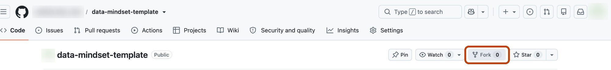
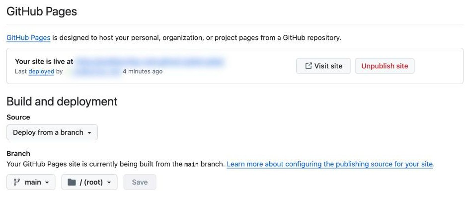
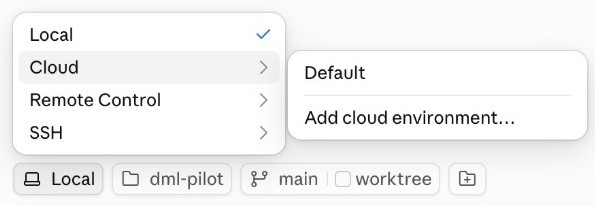
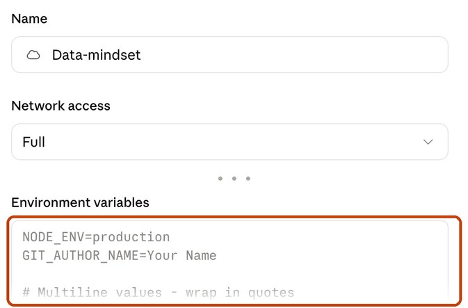

Three parts, about 5 minutes each. Once, before lesson 1. You can stop between parts.
Your own copy of the platform, published as your site.
GitHub can take several minutes, showing "Forking…". Refreshing doesn't help: wait until the page changes.

a repository named your-name/data-mindset-template, with "forked from…" under its name. This is yours: every later step happens there.
Working as a group? One of you forks, then Settings → Collaborators → Add people.
github.com/your-name/data-mindset-template (it says "forked from…" under its name)."Your site is live at https://your-name.github.io/data-mindset-template/". That's your site.
If Pages says "Upgrade or make this repository public", you're not on your fork.

Your database, where everything is recorded.
data-mindset
the project's home page, with its address https://….supabase.co near the top.
>_ icon). Click New query, paste (⌘V), Run. If it warns about destructive operations, confirm: it only creates what's missing.a small result table listing sessions, clicks, selections, identities.
your email in the list of users.
Your AI assistant, connected to your platform.
No Code tab, or no Cloud option? Your plan doesn't include Claude Code.

a form with boxes for a name, network access and environment variables.
Data-mindset.default.
This is the password your assistant uses to build in your database. It lives only in this form: never paste it in the chat.
the chip above the message box now says Data-mindset.
data-mindset-template.your-name/data-mindset-template (Refresh list if needed).above the message box: Data-mindset · data-mindset-template · main.
Next time you click + New, pick Data-mindset again from the cloud chip: it's your environment.
| Your name | as your lecturer knows you |
| Supabase project URL | On your project's home page, click Copy next to the address: a list opens. Click Project URL. |
| Publishable key | Same list: click Publishable key (starts with sb_publishable_). |
it says your details are saved.
Never paste the secret key here. If you do, your assistant tells you how to replace it.
Until you register, your lecturer can't see you or open lessons for you.
Right after step 8, it checks your setup by itself, one line each:
ALL GOOD, then "Reported to your lecturer: setup done." If a line says FAIL, it tells you which step to redo.
Then open your dashboard (it gives you the link) and sign in with step 6's email and password.
your dashboard, and your first lesson: lesson 0, with the link to its slides.
Every time: Code → + New, pick Data-mindset on the cloud chip, then ask "What are we working on?"